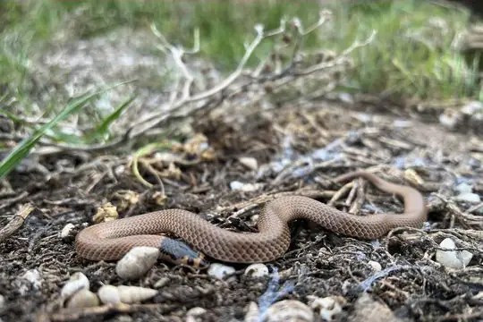
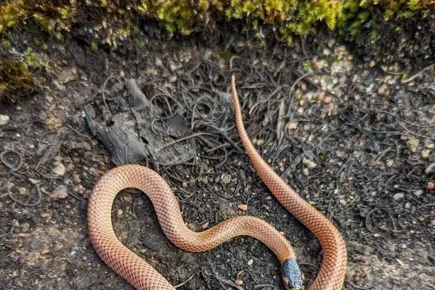
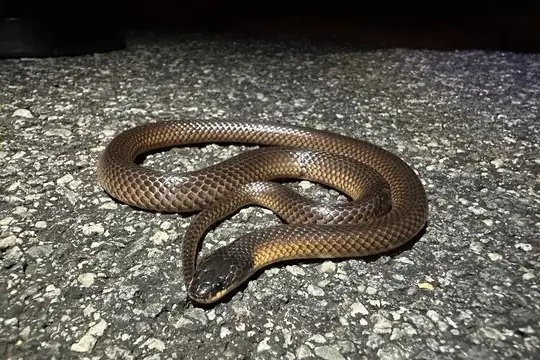
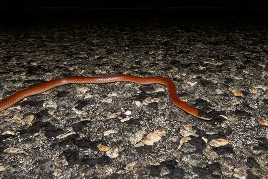
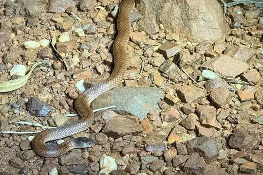
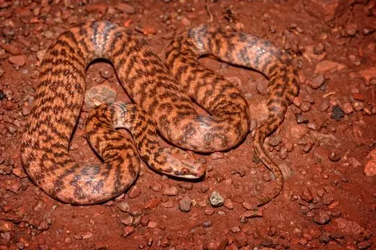
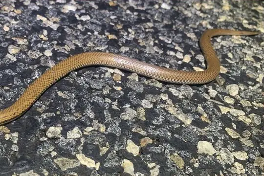
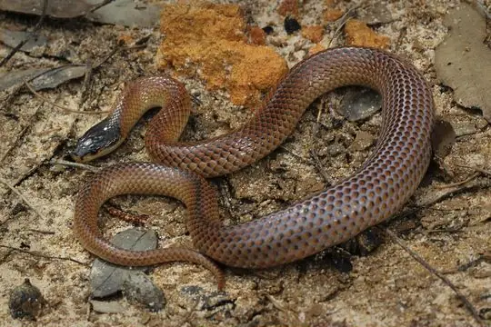
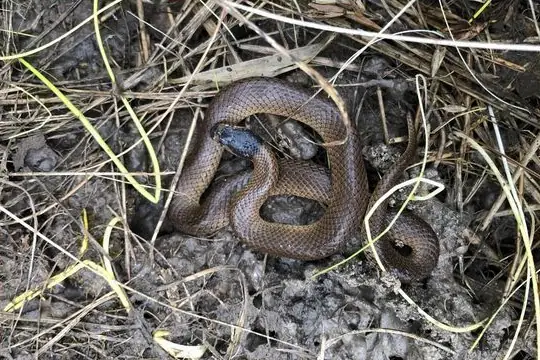

Suta
The genus Suta (family Elapidae) has 11 species in SnakeList (all venomous), recorded in 1 country.
- 11species
- 11venomous
- 1country
About the genus
A genus of the family Elapidae (cobras, mambas, coral snakes, sea snakes and relatives).
Species
Showing 11 species

Bush’s Hooded SnakeSuta spectabilis
Gould's Black-headed SnakeSuta gouldii
Mallee Black-backed SnakeSuta nigriceps
Monk SnakeSuta monachus Myal SnakeSuta suta
Myal SnakeSuta suta- No photo yetOrd Curl SnakeSuta ordensis

Pilbara Hooded SnakeSuta gaikhorstorum
Rosen's SnakeSuta fasciata
Spotted SnakeSuta punctata
Variable Black-naped SnakeSuta dwyeri
Whip Hooded SnakeSuta flagellum
No snakes in Suta match.